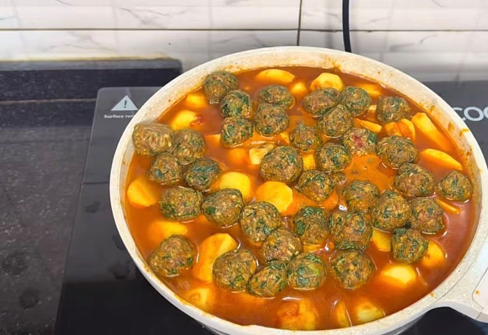

North Africa · Morocco
Chicken Tagine
Tagine is both a dish and the conical clay pot it is cooked in. In Morocco, slow-cooked tagines combine tender meat with warm spices, olives and preserved lemons, and are shared at the table with bread or couscous.

Ingredients
Quantities update automatically.
- 1 kg chicken thighs
- 2 onions, sliced
- 3 garlic cloves, crushed
- 1 tsp ground ginger
- 1 tsp ground turmeric
- 1 tsp ground cumin
- 1 tsp ground cinnamon
- 1 pinch saffron threads
- 1 preserved lemon, rind sliced
- 0.5 cup green olives
- 2 tbsp olive oil
- 1 cup chicken stock
- 1 handful fresh coriander and parsley
Cooking instructions
Preparation
- Mix the garlic, ginger, turmeric, cumin, cinnamon and a little olive oil with the chicken.
- Leave to marinate for at least 1 hour, or overnight in the fridge.
- Soak the saffron in 2 tablespoons of warm water.
Cooking
- Heat the oil in a tagine or heavy pot and soften the onions.
- Add the marinated chicken and brown lightly on all sides.
- Pour in the stock and the saffron water. Cover and simmer gently for 45 minutes.
- Add the preserved lemon and olives and cook for another 15 minutes, uncovered, until the sauce thickens.
- Scatter with fresh herbs and serve with bread or couscous.
Video tutorial
Nutrition facts
| Calories | Carbohydrates | Protein | Fat |
|---|---|---|---|
| 420 kcal | 18 g | 38 g | 22 g |
Where it comes from
Chicken Tagine is associated with Morocco.